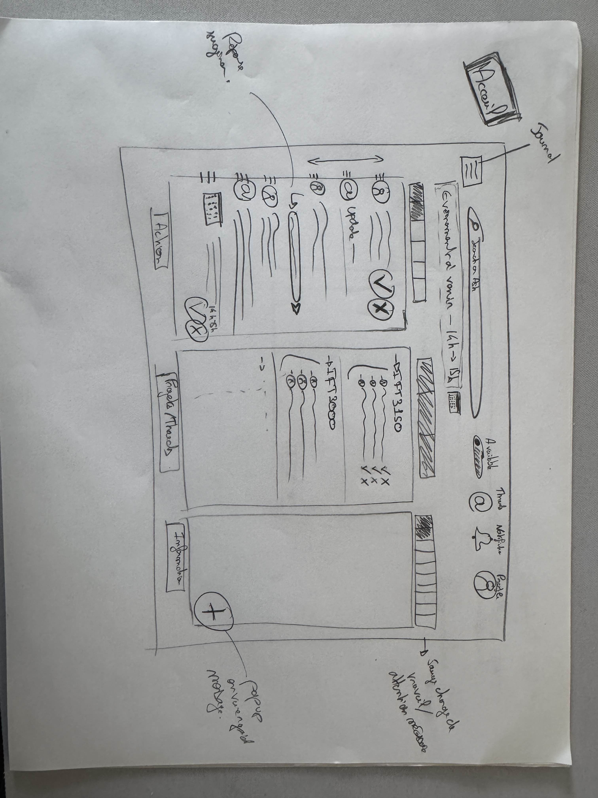

Description du projet
Accord est bien plus qu'une simple solution de gestion d'emails. C'est une véritable révolution dans la façon dont les entreprises interagissent avec leur messagerie. Au cœur d'Accord se trouve un moteur d'IA sophistiqué qui comprend le contexte et le contenu de chaque message avec une précision inégalée. Grâce à des modèles de machine learning et au traitement du langage naturel, Accord catégorise automatiquement vos emails, détecte leur niveau de priorité et même le sentiment qu'ils expriment.
Fini le temps perdu à trier manuellement votre boîte de réception ! Trouver un email ancien ou une pièce jointe égarée n'a jamais été aussi simple grâce à la recherche intelligente d'Accord. De plus, vous n'aurez plus besoin de vous soucier de répondre aux emails quand vous êtes occupé. La gestion des emails est devenue une tâche chronophage qui réduit la productivité des professionnels. Les utilisateurs sont submergés par le volume de messages, la difficulté à distinguer l'important de l'accessoire, et le besoin constant de rester connectés même dans des moments d'indisponibilité.
Accord va plus loin en introduisant des sections intelligentes qui transforment votre façon de traiter les emails.
- La section "Actions" regroupe tous les messages qui nécessitent votre intervention, comme confirmer un rendez-vous ou approuver une demande.
- La section "Informations" quant à elle, rassemble les notifications et messages informatifs qui ne requièrent pas d'action immédiate de votre part.
- La section "Thread" organise intelligemment vos conversations en regroupant les messages liés, vous permettant de suivre facilement le fil des échanges complexes et de comprendre le contexte global de chaque discussion.
La détection de disponibilité d'Accord utilise des algorithmes avancés pour informer intelligemment vos correspondants de votre situation, que vous soyez en réunion, en vacances ou concentré sur une tâche importante. Enfin, Accord a été pensé pour une intégration transparente et un déploiement à grande échelle. Que vous soyez une petite équipe ou une grande organisation, Accord s'adapte à vos besoins et à vos workflows existants.
Exigences
Besoins fonctionnels & Besoins non fonctionnels
| Catégorie | Besoins fonctionnels | Besoins non fonctionnels |
|---|---|---|
| Authentification |
• Création de compte • Connexion via compte existant • Gestion sécurisée des sessions |
- |
| Configuration |
• Configuration IMAP/SMTP • Synchronisation des emails • Support multi-comptes • Validation visuelle |
• Mode hors-ligne • Synchronisation automatique |
| Interface |
• Vue liste/threads • Filtres et recherche • Regroupement par thèmes • Vue unifiée • Priorisation visuelle • Mode focus |
• Interface drag-and-drop • Création visuelle de règles |
| Classification |
• Catégorisation automatique • Reclassement manuel pour affiner l’algorithme • Regroupement intelligent • Recommandations d'actions |
• Analyse de sentiment • Suggestions de réponses semi-personnalisées selon le contenu de l’e-mail • Suggestions de réponses via des variables comme l'horaire |
| Synthèse |
• Résumé automatique • Vue dédiée • Interaction avec synthèses • Résumés périodiques |
• Statistiques avancées • Mesure de charge cognitive basée sur des paramètres comme la longueur, le type d'e-mails, ou le délai moyen de réponse |
| Disponibilité |
• Jauge d'attention • Paramétrage auto/manuel • Statut visuel • Synchronisation calendrier |
• Intégration calendriers externes • Génération de tâches |
| Suivi |
• Historique des actions • Évolution de la boîte • Analyse des actions |
• Temps de réponse moyen • Statistiques de volume • Métriques de performance |
| Notifications |
• Alertes configurables • Plages horaires • Intégration jauge attention |
• Alertes de ton critique • Notifications groupées |
Infrastructure
Rapport d'avancement
Semaine 1 –
Ouverture de projet & Élaboration des exigences
Objectifs
- Se familiariser avec les outils qui seront utilisés pour le projet: Electron, React, FastAPI
- Produire une première version de l'échéancier
- Brainstormez des idées pour capturer le concept de jauge d'attention (fonctionnalités, algorithmes, ou visuels dans l'interface).
- Recherchez et documentez brièvement des solutions existantes qui servent de wrappers ou d'agrégateurs pour la messagerie et les courriels.
- Recherchez et documentez brièvement des outils ou techniques de classification ou synthèse de messages.
Réalisations
- Exploration de plusieurs applications essayant d’implémenter l’IA pour les courriels, notamment Spark.
- Choix de se concentrer sur les courriels plutôt que la messagerie (trop de bruit et débit de messages important) afin de «réinventer la façon dont on utilise les emails aujourd’hui».
- Discussion autour de la «jauge d’attention» et de ses différentes manières de représentation.
- Début de croquis sur papier pour le design de l’application.
- Exploration des solutions avec Electron.
Notes
Semaine 2 –
Approfondissement de l'analyse des exigences
Objectifs
- Personnalisation avancée : Analysez des solutions offrant des fonctionnalités de personnalisation poussée. => Établir une liste de fonctionnalités pertinentes.
- Prototypez une interface : Dessinez des prototypes jetables illustrant des fonctionnalités clés de l'application (ex: jauge d’attention, priorisation des messages, personnalisation). => Prototypes de 2 à 3 écrans.
- Techniques de classification avancées : Recherchez des outils ou techniques de classification de messages. => Établir des critères de classification et une procédure (algorithme simplifié) pour la classification.
- Synthèse et résumé : Étudiez des solutions intégrant des techniques de synthèse ou de résumé automatique. => Une idée ou un exemple montrant comment cette fonctionnalité pourrait être intégrée au projet.
Réalisations
- Discussions approfondies sur le prototypage et le design de l’application, avec un focus sur l’expérience utilisateur.
- Analyse des fonctionnalités clés : personnalisation avancée, gestion des priorités et synthèse automatique des messages.
- Recherche et comparaison des solutions existantes intégrant des techniques de classification et de résumé automatique.
- Exploration des outils et plateformes pouvant être intégrés au projet.
- Définition des premiers critères de classification et priorisation des messages.
- Préparation des prochaines étapes vers les premières maquettes fonctionnelles.
Notes
Semaine 3 et 4 –
Modélisation de l’application
Objectifs
-
Lister les besoins fonctionnels
- Créer un document listant les fonctionnalités essentielles et optionnelles.
- Préciser des scénarios d’usage (brefs justificatifs) en lien avec l'objectif de l'application.
- Dessiner les flux principaux de l'application
-
Prototyper les vues et interactions de l’application (Figma)
- Vues : Accueil, Message, Profil, Thread, Journal.
- Jauge d'attention/de disponibilité.
-
Commencer le modèle de données et l'architecture générale
- Établir un schéma conceptuel (entités, attributs, relations).
- Créer une première version de l'architecture en suivant le modèle C4 (niveau 2).
-
Choisir les algorithmes de classification de message, de
synthèse de message et d'estimation d'effort cognitif
- Préciser la provenance des données, les étapes de prétraitement, et les besoins techniques en termes d’infrastructure.
- Prototyper un exemple de classification ou de synthèse en code.
Rappel: Nous commencerons l'implémentation à la semaine 4.
Réalisations
- Mise en place réussie du premier prototype d'Accord avec validation des fonctionnalités de base
-
Établissement de l'architecture initiale de la base de données
MongoDB :
- Définition des collections principales
- Structure des relations entre données
- Schémas de validation
- Identification et validation d'un dataset pertinent pour l'entraînement des modèles de classification
-
Finalisation de la stack technique :
- Frontend : ReactJS -Electron
- Backend : Python - FastAPI
- Base de données : MongoDB
Réalisations en images
- Prototype jetable initial : 
-
Prototype interactif :
.PNG)
Notes
Suite à l'évaluation des différentes approches, nous avons opté
pour le prototype interactif en raison de sa flexibilité et de son
potentiel d'évolution. Concernant la gestion de l'indisponibilité
des utilisateurs, nous pensons développé une solution hybride :
Pour les utilisateurs d'Accord : Une jauge de disponibilité
dynamique s'affiche lors de la saisie du destinataire, permettant
une visibilité immédiate du statut.
Pour les non-utilisateurs : Implémentation d'un système d'encodage
de réponses automatiques intégré aux messages. Ces réponses
apparaissent comme des messages standards pour les
non-utilisateurs tout en étant interprétables par Accord, assurant
ainsi une compatibilité universelle.
Semaine 5, 6 et 7 –
Objectifs
- Améliorer l'interprétation de la jauge d'attention.
- Mettre en évidence la barre de recherche/commande.
- Intégrer l'accès au profil utilisateur sans ouvrir une nouvelle fenêtre.
- Grouper/catégoriser les informations dans la catégorie Information/Annonces/Communiqués.
- Libeller un ensemble de courriels pour entraîner le modèle de classification.
Réalisations
- Un bon début pour la jauge d'attention, mais elle est difficile à interpréter actuellement.
- Les métriques affichées sont intéressantes pour enrichir le profil de l'utilisateur, mais ne semblent pas pertinentes pour l'utilisateur.
- La barre de recherche/commande devrait être mise en évidence (position centrée au-dessus des catégories).
- Discussion sur la recherche sous forme de chatbot, ouvrant un petit contexte de dialogue.
- Accès au profil utilisateur sans ouvrir une nouvelle fenêtre, mais plutôt "par-dessus" la page active.
- Catégorie Information/Annonces/Communiqués risque de se remplir très vite, trouver un moyen de grouper/catégoriser les informations.
- Difficulté dans la synthèse due à la taille des courriels (souvent trop courts).
- Libeller un ensemble de courriels (~500) pour entraîner le modèle de classification.
- Prétraitement: Voir l'effet de stopwords et d'un jeu de pondération selon la position du mot dans le texte (hint: Subject > Body).
- On ne stockera pas les courriels dans la BD, mais utiliser un identifiant pour conserver la trace/référence du courriel.
- Effet de la période de la journée sur la priorisation des messages.
- Travail sur les fonctionnalités UI d'ajustement/repositionnement des grandes catégories (boîtes).
Notes
Nous sommes actuellement dans la phase de peaufinage de l'interface et de développement du backend. Nous prévoyons, à la semaine prochaine (retour de relâche), de lier le frontend et le backend.